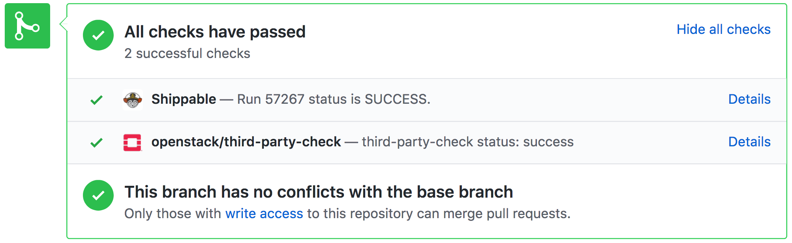

Zuul - Crossing your CI Streams
Clint Byrum -- @SpamapS on Freenode IRC and Twitter. http://fewbar.com/
Cloud Software Engineer, GoDaddy
Words are my own I do not speak for GoDaddy or any project/foundation
"Continuous Integration"
- Master* gets code ASAP
- Tests run to make sure Master/tip/HEAD/trunk isn't broken
* git is assumed -- sorry hg/svn/etc.
What are tests?
- Unit -- self contained -- "do my insides still work?"
- Functional -- mostly self contained -- "do my interfaces still work?"
- Integration -- externalized -- "do I still work the way you think I do?"
When do you run them?
- Locally on my dev workstation/laptop in a tight loop
- Periodically from master/tip/HEAD/trunk
- On master/tip/HEAD/trunk + change in review aka "PR"
Do you like it when they fail?
- When you expect it -- yes!
- When you pull master and change nothing, not so much.
Who broke the build?
- Oh wait no, it was my change sorry
- No wait it was THEM
Nobody's fault
- Reality changed between your PR and Merging it
- Nobody re-tests everything because zomg who has time?
Gating Saves us
- Test again before merge!
- Never merge broken tree
- Ergo, devs keep working and don't hate "THEM"
And that was just functional tests...
- You probably have a ton of dependencies
- They're all going through the same thing!!
- Large distributed system made of smaller pieces
- Functional testing is not enough -- each service is interdependent on others
- Zomg 900+ developers 40+ orgs all collaborating!

Zuul was developed at this scale
- 1500+ active test nodes at once
- Jenkins was sad -- so we removed it
- Ansible offers a perfect distributed workflow system for running multi-node tests
Features that you can use
- Gerrit and Github Code Review triggering/commenting/voting
- Git based configuration
- Speculative merging for high-velocity gating
- Custom image building/reuse (via Nodepool)
- Multi-Region/Multi-Cloud (via Nodepool)
- Easy multi-node testing
- Massively Scalable
- Cross-repo and Cross-source speculative merge gating
Gerrit and Github
- Gerrit -- Apache licensed code review tool used for big projects like OpenStack and Android
- Github -- Proprietary website and on-premises "Enterprise" code-review/hosting system
- Install OpenStack Zuul app on your github repo
Ansible Collaborating with OpenStack via Zuul
PR's to Ansible's OpenStack modules are tested via Zuul  https://github.com/ansible/ansible/pull/37170YAML config in-repo or centralized defines config
- project:
name: ansible/ansible
third-party-check:
jobs:
- shade-ansible-devel-functional-devstack:
files:
- ^lib/ansible/modules/cloud/openstack/.*
- ^contrib/inventory/openstack.py
- ^lib/ansible/plugins/inventory/openstack.py
- ^lib/ansible/module_utils/openstack.py
- ^lib/ansible/utils/module_docs_fragments/openstack.py
Speculative merging for high velocity merging
[ switch to other presentation ]Custom Image Building/Multi-Cloud
- Pre-cache all those downloads
- Nodepool manages image uploads and refreshes periodically
- Uses diskimage-builder -- whole other talk
- Multi-Cloud -- as long as they're all OpenStack clouds (over 20 public OpenStacks globally)
- AWS, Kubernetes, and other resource drivers are available but un-merged
Easy Multi-Node testing
- job:
parent: base
name: test-kolla-ansible
run: kolla_ansible/main.yml
nodeset:
nodes:
- name: meta-api
label: kolla-centos7
- name: cell-api
label: kolla-centos7
- name: db
label: kolla-centos7
- name: mq
label: kolla-centos7
- name: hypervisor
label: kolla-centos7
Easy Multi-Node testing
- name: "Setup docker on servers that will need it."
hosts: cap,map,hv
roles:
- docker
- name: "Setup database on db server."
hosts: db
roles:
- db
- name: "Setup rabbit on mq server."
hosts: mq
roles:
- mq
Massively Scalable

Cross-Repo Dependency Controls
- Make one change depend on another
- Build speculative cross-repo change-set and test it without merging it
- Allows devs to "fire and forget" on a PR, it won't merge until it will actually work!
- Struggles with circular deps, you must unroll to use the feature
- Wait for v3.0 release VERY soon -- next week? Maybe
- ... or you can use it from master like we do at GoDaddy (and other users). Caveat Emptor
- git clone https://git.openstack.org/openstack-infra/zuul/
- #zuul on Freenode IRC
- https://zuul-ci.org/ -- Mailing lists here!